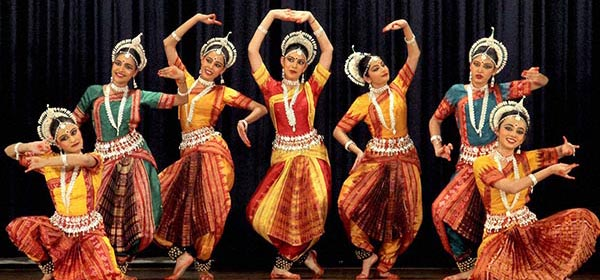

.jpg)

Creencias religiosas
- Las religiones de origen indio son las llamadas religiones dhármicas (en sánscrito, dharma significa
“religión” o “ley religiosa”). Entre estas doctrinas se encuentran el hinduismo, el budismo, el
jainismo y el sijismo, muy arraigadas en la sociedad.La mayor parte de la población india, el
99,69%, es creyente. La religión más extendida es el
Hinduismo, con un 80,45% de personas que lo profesan.
En los últimos años el porcentaje de creyentes se ha mantenido, ha pasado del 99,69% al 99,69%. En cuanto al Hinduismo ha aumentado, en la encuesta anterior lo profesaban el 80,2% y según los últimos datos lo profesa el 80,45% de la población. Aunque ocupa el segundo lugar, también es importante el Islam, con un 13,4% de la población que lo profesa..
Gastronomia
-
La gastronomía india o gastronomía hindú es muy variada; surge como resultado de la diversidad de
culturas que la han enriquecido a lo largo de las colonizaciones acaecidas durante varios
siglos.
Así se fueron incorporando diferentes prácticas culinarias traídas por los colonos que con el tiempo
se fueron mezclando hasta llegar a ser el conjunto de tendencias que se conocen en la actualidad. La
mayoría de los sabores de la India están íntimamente relacionados por el uso significativo de
especias, y una gran variedad de verduras. Dentro de esta tendencia general existe una diversidad
enorme de estilos locales.
Los ingredientes más importantes empleados en la cocina india son el arroz, atta, un tipo especial de harina de trigo integral con el que se elabora el pan, y al menos cinco docenas de variedades de legumbres. La más importante es la chana (garbanzo, chícharo), así como el toor (garbanzo indio), el urad (lenteja negra) y el mung (soja verde).
Danzas
-
La India tiene diferentes bailes clásicos a lo largo del país, los cuales se basan en la
espiritualidad, el amor y la cultura. En la India, la palabra «nâtya» significa danza, lo cual
representa el canto, la música y la cultura india, reflejada en la tradición de los dioses. Sin
embargo, son 8 los bailes típicos que podemos observar más a menudo en la India: una mezcla de
teatro, drama, poesía, música y un sin fin de emociones expresados a través de la danza. Gracias a
su riqueza artística, gracia y colorido, se han convertido en un atractivo internacional (dados a
conocer principalmente mediante el cine bollywoodense y conseguido fanáticos en todo el
mundo).
Si bien los 8 principales bailes indios son muy parecidos, lo que los diferencian es de dónde provienen y los movimientos en que se basan:Bharatanatyam,Kathak,Odissi,Mohiniyatta, Kuchipudi,Manipuri,Sattriya,Kathakali
Idiomas y literatura
-
Debido a su diversidad regional, el gran número de idiomas existentes en la India ha provocado la
aparición de diferentes culturas (existen 216 idiomas, cada uno de ellos hablado por grupos de 10
000 o más personas).
La gran mayoría de estos idiomas proceden de dos familias lingüísticas fundamentales: la familia
drávida y la familia indoaria, la primera concentrada en la zona del sur y la segunda más presente
en el norte. Además de estas dos familias existen hablantes de otras familias lingüísticas no
relacionadas las lenguas munda y las lenguas tibetano-birmanas que se restringen a pequeñas áreas
dentro del país. La Constitución de la India estipula que el hindi y el inglés son los idiomas
oficiales del Gobierno nacional.
Son también oficiales un total de 22 idiomas, utilizados básicamente por los gobiernos regionales. El sánscrito es la lengua clásica de la India y el sureste de Asia, y posee un papel similar al que el latín o griego desempeñan en la cultura occidental. El sánscrito es objeto de estudio, incluso en Japón y en el mundo occidental, debido a su importancia cultural y religiosa. El idioma clásico de la familia dravidiana es el antiguo tamil. El número de hablantes tanto de idiomas oficiales a nivel local como de dialectos se cuenta por millones en sus regiones de origen.
República de la India en la actualidad
Capital
Dueña de una riqueza arquitectónica impresionante, la capital de la India es una de las ciudades más antiguas del mundo. Centro nacional de la cultura, la política y el comercio, Nueva Delhi es la segunda urbe más poblada del país después de Mumbai. Para conocer más sobre su industria, su educación y sus atractivos turísticos, lea la siguiente nota. Con 14 millones de habitantes distribuidos en nueve distritos –donde se encuentran 821 mujeres por cada mil hombres-, un 81% de alfabetismo y con unos de los PIB más altos de la India, Nueva Delhi es la sede del gobierno y el parlamento indio. Las principales industrias desarrolladas en la ciudad son las relacionadas con la fabricación de hojas de afeitar, bienes deportivos, piezas de radios y televisores, plásticos, productos de PVC, textiles, productos químicos, fertilizantes, refrescos y herramientas de maquinarias. Sin embargo, el sector terciario es el que genera más ingresos, principalmente a través de las telecomunicaciones, la energía, la construcción, la salud y el turismo.
Superficie
La India es un vasto país de Asia del Sur con un terreno diverso que abarca desde las cumbres del Himalaya hasta la costa del océano Índico. Tiene una historia de más de 5 milenios. En el norte, los monumentos históricos del imperio Mogol incluyen el complejo del Fuerte Rojo de Delhi y la enorme mezquita de Jama Masjid, junto con el icónico mausoleo del Taj Mahal en Agra. Los peregrinos se bañan en el Ganges en Varanasi, y Rishikesh es un centro de yoga y una base para las excursiones al Himalaya.Asi teniendo una superficie de 3.287 millones km²
Clima
Invierno
Los meses de diciembre a marzo comprenden el invierno en el clima de la India, es cuando más frío hace
(sobre todo diciembre y enero). Por ello, aunque la temperatura normalmente no baja de 4/5 grados por la
noche, sí que se nota el frío. Por el día sube a entre 15 y 20 grados.
Las noches en el desierto del Thar son bastante frías. Un suceso meteorológico reseñable del clima en la
India durante estos meses es la aparición de niebla, principalmente en el norte. El clima de la India en
el sur, en cambio, es suave y moderado.
Verano o pre-monzón
Entre abril y junio es la época del año en la India donde en hace mayor calor. En el sur y oeste es
abril el mes más caluroso y en el norte es mayo. Las temperaturas medias máximas oscilan habitualmente
entre los 32 y los 40 ºC, con muchos días pasando los 45.
Monzón o temporada de lluvias
Dura entre julio y septiembre. Destaca por el monzón húmedo proveniente del suroeste, que recorre el
país empezando por el sur desde finales de mayo. A finales de septiembre empiezan a reducirse las
lluvias en el norte y va retrocediendo hacia el sur.
Normalmente el norte recibe menos precipitaciones que el sur. La zona sureste se puede ver afectada por
monzones durante más tiempo y se suelen alargar durante octubre y noviembre, recibiendo menos lluvias
entre junio y septiembre. Existe la posibilidad de lluvias torrenciales algunos días que suelen durar
minutos u horas y después vuelve a salir el sol.
Post-monzón u otoño
Dura los meses de octubre y noviembre. La mayor parte del país no tiene lluvias aunque Tamil Nadu recibe
el monzón del sureste. Los meses de octubre, noviembre y hasta mediados de diciembre gozan de un clima
suave y moderado.
Ríos y mares principales
En el Marco del hinduismo, los sapta sindhu.son siete ríos que —entre todos los de la India— son
considerados los más sagrados y por ello son objeto de peregrinaciones a algunos lugares de sus cursos o
sus fuentes. El agua desempeña un papel purificador en el hinduismo, y frecuentemente las orillas de los
ríos están acondicionadas con escaleras, gradas o bancadas (conocidas como ghats) para poder realizar
las abluciones y la inmersión en el agua, parte de ese proceso de purificación.
El antiguo texto Rig-veda (el primer texto de la India, de mediados del II milenio a. C.) se refiere a
menudo a los «siete ríos», como un grupo de ríos principales que ahora es difícil de identificar. Es
probable que los nombres deriven de antiguos hidrónimos proto-indoiranios o protoindoeuropeos ya que hay
nombres cognados en avéstico y en otras lenguas indoeuropeas.
Aparentemente el número siete es más importante que el nombre de esos ríos. Los «hapta həndu»
mencionados en el Avesta se suelen equiparar con los siete ríos védicos.
Hoy día, los siete ríos que se consideran sagrados en la India son los siguientes:
río Ganges;
río Yamuna;
río Sárasuati;
río Indo;
río Godavari;
río Narmadá;
río Kaveri;
LÍMITES TERRITORIALES DE LA INDIA
- Límite al OESTE: Mar Arábigo. - Límite al SUR: Océano Índico. - Límite al ESTE: Bangladés, Birmania
(Myanmar) y la Bahía de Bengala.
Altitud
Altitud extrema
Altitud mas alta 8586,Altitud en la india:7816,Altitud mas baja:-2,2
Forma de gobierno
El sistema político de la India está basado en el modelo de Westminster, pero se organiza de manera
federal. Su gobierno, desde la independencia, a excepción de un periodo de casi 10 años, ha estado
controlado por los herederos políticos de Gandhi. Hasta las últimas elecciones, este país presentaba un
multipartidismo atomizado. En mayo del 2009, el partido político más antiguo, Congreso Nacional Indio
(INC), logró una votación arrasadora y cambió el panorama político, aunque en el presente se duda de su
eficacia.
La organización política de la India actual se fundamenta en la unión de 28 Estados y
Siete Territorios, mediante un sistema federal. Constitucionalmente se define como una “República
democrática socialista y secular”, con un sistema parlamentario de Gobierno.
El Poder Ejecutivo está conformado por el Presidente, el Primer Ministro, y el Consejo de Ministros. El
Presidente es el Jefe de Gobierno, pero la verdadera autoridad del Ejecutivo es el Primer Ministro. La
presidencia -en el caso indio- es una figura que reemplaza a la de la Reina de Gran Bretaña. Esto quiere
decir que tiene una autoridad más bien simbólica y protocolar y cuenta con muy pocas atribuciones.
Este país tiene el tercer aparato estatal más grande del mundo, el 39,5% de los empleos que existen en
la India se originan en el sector público, y eso que el Servicio Público exige un estándar muy alto para
sus funcionarios, tanto así, que en este país los trabajadores públicos son considerados una elite.
Población
India es el segúndo país en número de habitantes, cerró 2020 con una población de 1.380.004.385 personas, lo que supone un incremento de 13.586.629 habitantes, 6.615.231 mujeres y 6.971.398 hombres, respecto a 2019, en el que la población fue de 1.366.417.756 personas. Según los últimos datos publicados por la ONU, tan solo el 0,38% de la población de India son inmigrantes. India es el 179º país del mundo por porcentaje de inmigración. India, que es uno de los países más grandes del mundo, tiene una densidad de población muy alta, de 420 habitantes por Km2.
Moneda
La rupia es la moneda oficial de la República de la India. Su emisión está controlada por el Banco de la
Reserva de la India. Está dividida en 100 países y su código ISO 4217 es INR.
Sistema
numeralLas grandes cantidades denominadas en rupias se cuentan por cientos de miles, es decir,
en lakhs (1 lakh= 105 rupias = 100 000 rupias), en crores (1 crore=100 lakhs = 107 rupias = 10 000 000
rupias) y en arawbs (1 arawb=100 crore = 109 rupias = 1 000 000 000 rupias). El uso de millones o
billones es menos común. Por ejemplo, la cantidad de 32 584 729,25 rupias equivaldría a 3 crore 25 lakhs
84 729 rupias con 25 paisas.
Lengua
Idiomas nacionales reconocidos de la India
El hindi y el inglés son los dos únicos idiomas con carácter oficial a nivel nacional en la India.
Además hay otros veintidós idiomas en diversos estados del país de carácter cooficial.
Alfabéticamente, los idiomas nacionales reconocidos de la India son los siguientes:
Asamés (idioma oficial de Assam).
Bengalí (idioma oficial de Tripura y Bengala Occidental).
Bodo (idioma oficial de Assam).
Cachemiro
Dogri (idioma oficial de Jammu y Cachemira).
Guyaratí (idioma oficial de Dadra y Nagar Haveli, Damán y Diu y Guyarat).
Hindi (idioma oficial de Islas Andamán y Nicobar, Bijar, Chandigarh, Chhattisgarh, Delhi, Jariana,
Himachal Pradesh, Jharkhand, Madhya Pradesh, Rayastán, Uttar Pradesh y Uttaranchal)
Canarés (idioma oficial de Karnataka).
Konkaní (idioma oficial de Goa).
Maijilí (idioma oficial de Tirjat).
Malabar (idioma oficial de Kerala y Lakshadweep).
Manipurí o Meitei (idioma oficial de Manipur).
Maratí (idioma oficial de Maharashtra).
Nepalí (idioma oficial de Sikkim).
Oriya (idioma oficial de Orissa).
Panyabí oriental (idioma oficial de Panyab).
Sánscrito (idioma clásico), apenas 200.000 hablantes (se usa actualmente como lengua litúrgica en el
hinduismo, el budismo y el jainismo. Hoy en día es uno de los veintidós idiomas oficiales de India,
utilizado con propósitos particulares y en menor medida como lengua vehicular de cultura.)
Santalí (hablado en Jharkhand, Assam, Bihar, Orissa, Tripura y Bengala Occidental)
Sindi (más hablado en la provincia pakistaní de Sind).
Tamil (idioma oficial de Tamil Nadu y Pondicherry).
Télugu (idioma oficial de Telangana y Andhra Pradesh).
Urdu (idioma oficial de Jammu y Cachemira).
Bandera
La bandera de la India cuenta con tres franjas de colores y un símbolo en el centro. Las tres franjas son de color naranja, blanco y verde (de superior a inferior) y el símbolo es una rueda color azul marino que cuenta con 24 picos .
PIB
El producto interior bruto de India en 2021 ha crecido un 8,9% respecto a 2020. Se trata de una tasa 155 décimas mayor que la de 2020, que fue del -6,6%. En 2021 la cifra del PIB fue de 2.571.622 M€, con lo que India es la 6ª economía en el ranking de los 196 países de los que publicamos el PIB. El valor absoluto del PIB en India creció 230.793 M€ respecto a 2020. El PIB Per cápita de India en 2021 fue de 1.863 €, 167 € mayor que el de 2020, que fue de 1.696 €. Para ver la evolución del PIB per cápita resulta interesante mirar unos años atrás y comparar estos datos con los del año 2011 cuando el PIB per cápita en India era de 1.049. Si ordenamos los países que publicamos en función de su PIB per cápita, India se encuentra en el puesto 145, por lo que sus habitantes tienen, según este parametro, un bajo nivel de riqueza en relación a los 196 países de los que publicamos este dato.
Ingreso per capita
El valor más reciente del indicador PIB per cápita (US$ a precios actuales) para India es 2,009.98 para
el año 2018. Durante los últimos 58 años, el valor de este indicador ha fluctuado entre 2,009.98 en 2018
y 82.19 en 1960.
Definición: El PIB per cápita es el producto interno bruto dividido por la población a mitad de año. El
PIB es la suma del valor agregado bruto de todos los productores residentes en la economía más todo
impuesto a los productos, menos todo subsidio no incluido en el valor de los productos. Se calcula sin
hacer deducciones por depreciación de bienes manufacturados o por agotamiento y degradación de recursos
naturales. Datos en US$ a precios actuales.
Mas sobre la historia de la india
| Historía | Información | Año |
|---|---|---|
| Prehistoria | Se tienen pruebas de la presencia de seres humanos modernos (Homo sapiens) en el subcontinente indio desde hace unos 75 000 años. Antes de ellos, el subcontinente fue poblado por homínidos —entre ellos el Homo erectus— hace unos 500 000 años. Se han hallado restos aislados de Homo erectus en Hathnora, en el valle del Narmada, en el centro de la India. En la parte noroeste del subcontinente se han descubierto herramientas elaboradas por protohumanos que han sido datadas en dos millones de años. El sitio arqueológico más antiguo del subcontinente, con restos de homínidos, se encuentra en el valle del río Soan, y contiene restos de homínidos. Se han encontrado sitios de industria lítica soaniana en la región de Sivalik, en los actuales Pakistán, India y Nepal. En el período Neolítico hubo asentamientos más extensivos en el subcontinente después de la última Edad de Hielo, hace aproximadamente 12 000 años. Los primeros asentamientos semipermanentes que se han confirmado aparecieron hace 9000 años en los refugios rupestres de Bhimbetka, en el territorio del actual estado indio de Madhya Pradesh. | (hasta ca. 1750 a. C.) |
| El período védico | El período védico toma su nombre de la cultura indoaria del noroeste de la India, aunque otras partes de la india tuvieron una identidad distinta durante este período. La cultura védica se describe en los Vedas, textos aún sagrados para los hindúes, que fueron compuestos de manera oral en sánscrito védico (un idioma proveniente del indoeuropeo de Asia central). Los Vedas son algunos de los textos más antiguos que se conservan de la India. El período védico abarca aproximadamente de 1750 a 500 a. C.y contribuyó a formar los cimientos de varios aspectos culturales del subcontinente indio. En términos de cultura, en este período muchas regiones del subcontinente pasaron por una transición de la Edad del Cobre a la Edad del Hierro. | (ca. 1750 a. C.600 a. C.) |
| Edad Media | Las primeras incursiones del islam en el Sur de Asia aparecen en el primer siglo después de la muerte del profeta Mahoma. El califa omeya de Damasco, Walid I, envió una expedición a Beluchistán y Sindh en el año 711 liderada por Muhammad bin Qasim (cuyo nombre fue dado al segundo puerto de Karachi). La expedición llegó hasta el norte en Multan, pero no logró retener la regencia de dicha región, ni establecer el régimen islámico en otras partes de India. Sin embargo, la presenscia de una colonia musulmana en Sindh permitió el desarrollo del comercio y el intercambio cultural, así como la propagación de la religión islámica a través de conversiones en algunas partes de la India. Tres siglos después, los turcos, persas y afganos intentaron conquistar la India a través de las rutas del noroeste. Mahmud de Ghazni (979-1030) encabezó una serie de expediciones contra los reinos de Rajput y estableció una base en Panyab para futuras incursiones. | (1206-1526) |
| Inicios de la Edad Moderna | En 1526, Babur, descendiente de Tamerlán y Gengis Kan y oriundo del centro de Asia, en lo que hoy es Uzbekistán, penetró por el paso Jáiber y estableció el Imperio mogol, que en su punto de máximo esplendor comprendía el territorio de los actuales Afganistán, Pakistán, India y Bangladés. El hijo de Babur, Humayun, fue derrotado por el guerrero afgano Sher Shah Suri en 1540 y obligado a retirarse a Kabul. Tras la muerte de Sher Sha, su hijo Islam Sha Suri y su general hindú Hemu Vikramaditya establecieron un gobierno secular en el norte de la India con capital en Delhi hasta 1556. Después de vencer en la batalla de Delhi, Akbar —nieto de Babur— derrotó a Hemu en la segunda batalla de Panipat el 6 de noviembre de 1556. El emperador Akbar el Grande intentó establecer una buena relación con los hindúes. Akbar declaró el "Amari", o la prohibición de sacrificar animales en los días santos del jainismo y redujo la yizia (impuesto para los no musulmanes). Los emperadores mogoles se casaron con la realeza local, se aliaron con los marajás e intentaron fusionar su cultura turco-persa con los antiguos estilos indios, con lo que crearon una cultura indo-persa y una arquitectura indo-sarracena. Akbar se casó con una princesa rashput, Mariam-uz-Zamani, y tuvieron un hijo, Jahangir, parte mogol y parte rashput, como los serían los futuros emperadores mogoles. | (1526-1858) |
Te dejo toda la bíografia completa de la india aqui:
Te dejo un documental de la india aqui:
En este video podras ver como son los mercados de la india:
Si los videos no te cargaron te dejo uno audios:
No viajes a la india antes de saber esto:
¿Por qué la INDIA es POBRE si es una gran POTENCIA?